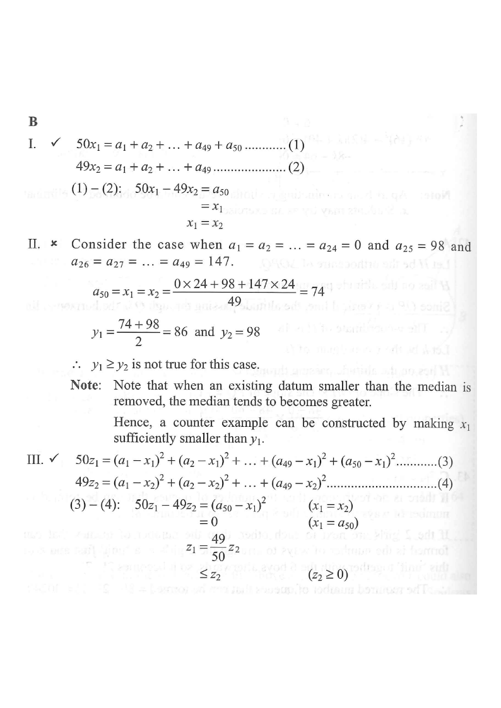

Step 1 — the data set: $a_1,\dots,a_{49},a_{50}$; the extra datum $\mathbf{a_{50}}$ is removed to give the second set.
Let $x_1$, $y_1$ and $z_1$ be the mean, the median and the variance of a group of numbers $\{a_1,a_2,a_3,\dots,a_{50}\}$ respectively while $x_2$, $y_2$ and $z_2$ be the mean, the median and the variance of the group of numbers $\{a_1,a_2,a_3,\dots,a_{49}\}$ respectively. If $x_1=a_{50}$, which of the following must be true?
I. $x_1=x_2$\qquad II. $y_1\ge y_2$\qquad III. $z_1\le z_2$
A. I and II only B. I and III only C. II and III only D. I, II and III

Mean of the $50$ numbers equals the last number removed:
$$\frac{a_1+a_2+\dots+a_{49}+a_{50}}{50}=a_{50} \;\;\Longrightarrow\;\; a_1+a_2+\dots+a_{49}=49\,a_{50}.$$
Hint: multiply through by 50 and cancel one $a_{50}$.
$$x_2=\frac{a_1+\dots+a_{49}}{49}=\frac{49\,a_{50}}{49}=a_{50}=x_1 .$$
So $x_1=x_2$. The mean is unchanged by removing $a_{50}$.
Hint: substitute step 1 directly into the definition of $x_2$.
Take $a_1=\dots=a_{24}=0$, $a_{25}=a_{26}=\dots=a_{49}=98$, $a_{50}=147$. Then $x_1=a_{50}=147$ (check: $\frac{98\times 24+147}{25}=147$).
Original set: $y_1=\dfrac{a_{25}+a_{26}}{2}=\dfrac{98+98}{2}=98$ (the $50$th value $147$ doesn't affect the median).
New set of $49$: the middle ($25$th) value is $a_{25}=98$, so $y_2=98$.
Here $y_1=y_2$, and other choices can give $y_1 Hint: removing a datum shifts which value sits in the middle — the median can rise.
$$50z_1=\sum_{i=1}^{49}(a_i-x_1)^2+(a_{50}-x_1)^2,\qquad 49z_2=\sum_{i=1}^{49}(a_i-x_2)^2 .$$
Since $x_1=x_2$ (step 2) and $x_1=a_{50}$, subtracting gives
$$50z_1-49z_2=(a_{50}-x_1)^2=0 \;\;\Longrightarrow\;\; z_1=\frac{49}{50}\,z_2\le z_2 .$$
Hint: compare the two "sum of squared deviations" expressions term by term.
Only statements I and III must be true $\Rightarrow$ option B.
Hint: always try a counter-example before accepting a "must be true" claim.
Question. The mean of \(12\) numbers \(a_1,a_2,\dots,a_{12}\) is equal to \(a_{12}\), and \(a_{12}=21\). (a) Find \(a_1+a_2+\cdots+a_{11}\). (b) Find the mean of \(a_1,a_2,\dots,a_{11}\). (c) If the variance of the \(12\) numbers is \(20\), find the variance of \(a_1,\dots,a_{11}\).